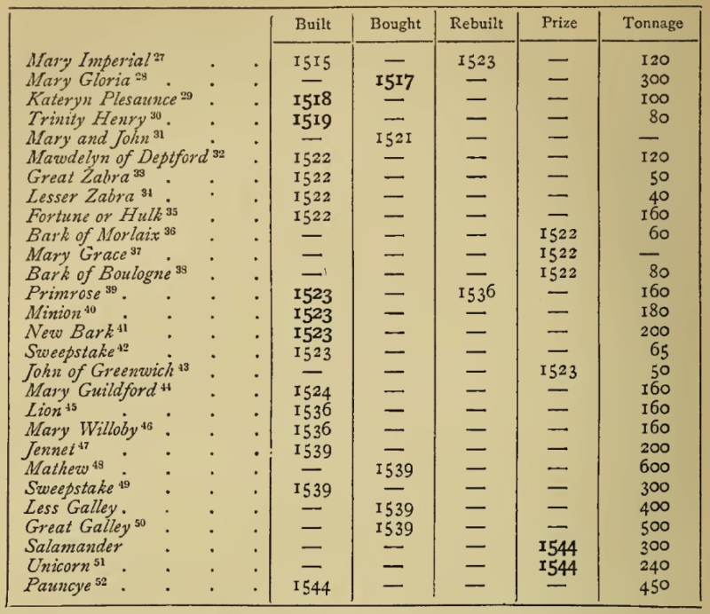

Странным может показаться такое сочетание: галеры – и английские. На всем протяжении нашего долгого путешествия по миру гребных кораблей и судов мы ни разу еще не сталкивались с тем, чтобы их строителями были англичане. Венецианцы, генуэзцы, турки, французы, испанцы, голландцы и русские, наконец, но англичане? Какого страху натерпелись англичане от французских галер Прежана де Биду – мы писали. Но чтобы сами они садились за весла – об этом мы не упоминали ни разу. Заполним этот пробел. При этом ограничимся пока шестнадцатым веком – веком наибольшего расцвета галерных флотов и веком сражения при Лепанто.

Английская галера Galley Subtle. Иллюстрация из манускрипта Anthony Roll , содержащего описание флота Генриха VIII (1546). British Library Additional MS 22047.
Прежде чем говорить об английских галерах по существу, скажем несколько слов по поводу термина galley (галера) в английском языке. В отличие от большинства других европейских языков, этот термин в английском – многозначен. Оставим в стороне значение galley – корабельная кухня, камбуз. И не будем вдаваться в тонкости полиграфии – там тоже этот термин используется. Нас будет интересовать использование слова galley применительно к типам кораблей.
Взглянем на отрывок из списка кораблей королевского флота Англии в 1548 году.

Фрагмент списка кораблей английского флота в 1548 году из книги M. Oppenheim, History of the Administration of the Royal Navy (1896), p.50
Мы найдем здесь два корабля с названием galley: Less Galley и Great Galley. Тоннаж их соответственно 400 и 500 тонн. Это сколько же потребовалось бы гребцов, чтобы придать этим судам даже самую скромную скорость? То, что эти корабли не являлись галерами в нашем понимании этого слова, косвенно подтверждается тем, что в других источниках они называются Less и Great Barks, соответственно. Так почему здесь эти корабли названы galleys?
Однозначного ответа на этот вопрос найти мне не удалось. Большая часть английских морских словарей по этому поводу либо пишет что-то расплывчатое и неконкретное, либо умалчивает вообще. Даже такой известный авторитет в английской морской лексике как Уильям Фалконер в своей статье о галерах ничего об этом не говорит. Впрочем, если покопаться, то некоторый свет на эту проблему проливает статья из словаря Фалконера о конструкции палуб корабля. А именно, в статье FRIGATE-BUILT он пишет:
FRIGATE-BUILT, (fregaté, Fr.) implies the disposition of the decks of such merchant-ships as have a descent of four or five steps from the quarter-deck and fore-castle into the waist, in contra-distinction to those whose decks are on a continued line for the whole length of the Ship, which are called galley-built.
Постройка по типу фрегата (фр. fregaté) предусматривает ступенчатое расположение палуб на купеческих судах , в виде четырех-пяти ступеней ведущих от квартер-дека и бака к шкафуту, в противоположность тем судам, на которых палубы идут непрерывно по всей длине корабля, и которые в этом случае называют построенными по типу галеры.
William Falconer, An Universal Dictionary of the Marine, or, a Copious Explanation of the Technical Terms and Phrases employed in the Construction, ...of a Ship...London: Thomas Cadell, 1780.
В другом месте, говоря о конструкции палубы, Фалконер называет такой тип корабельной палубы Flush-deck, или Deck-Flush fore and aft, «непрерывная палуба, идущая от носа до кормы по одной линии, без промежутков (a continued floor laid from stem to stern, upon one line, without any stops or intervals).
Так что, получается galley – это корабль со сплошной палубой от носа до кормы, а значит galley=corvette, ибо, согласно словарю Бриндли (1832), например, corvette – a flush-deck vessel – судно с непрерывной палубой?
Конечно же нет.
Примерно до середины XVII века английские galleys были подобны средиземноморским галерам (как на иллюстрации из Anthony Roll, приведенной в начале поста), либо представляли собой их более мелкие модификации (бригантина, гребной фрегат и т.п. ). В семнадцатом же веке произошло соединение конструкций гребного фрегата и чисто парусных кораблей той эпохи, в результате чего родился тип galley frigates, представители которого в название свое включали слово galley. Вот и родились такие корабли, как James Galley , Charles Galley и им подобные, о которых мы расскажем в следующих постах.
В конце XVIII века история термина galley получила еще одно продолжение. Так стали называть небольшие гребные артиллерийские суда, или мониторы. Особенно интенсивно такие гребные суда использовались в американском флоте.
Что мы можем сказать в итоге? Термин galley может относиться как к «типичной» средиземноморской галере, так и парусно-весельному кораблю, на котором весла являются вспомогательным движителем. Важно отметить, что именно вспомогательным, а не аварийным. И для использования весел на таких кораблях есть необходимые приспособления – весельные порты, уключины и т.п.
Продолжение последует.